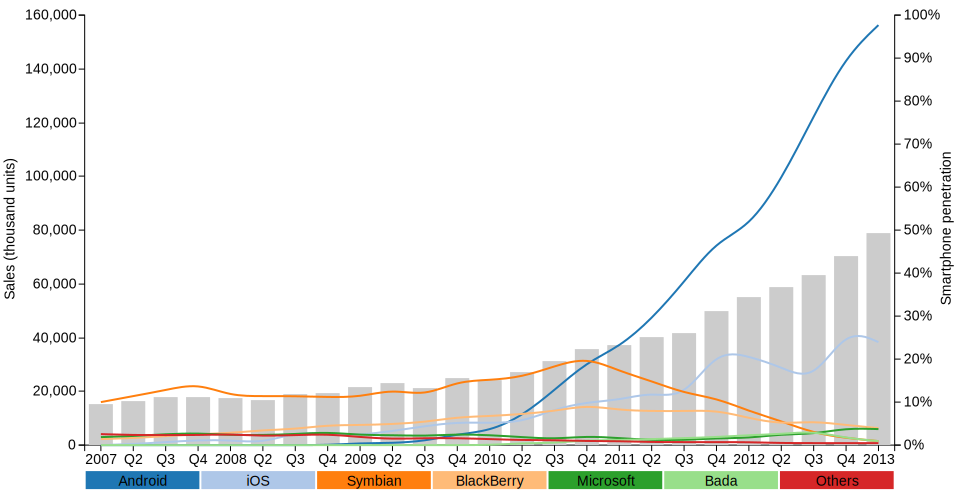
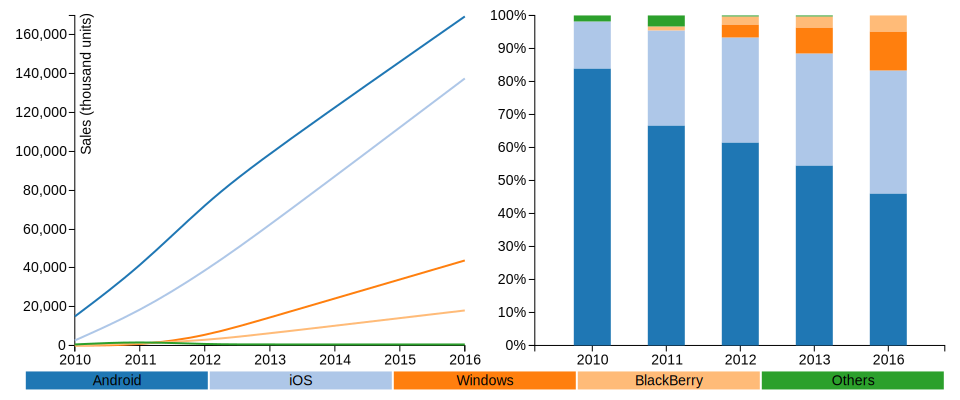
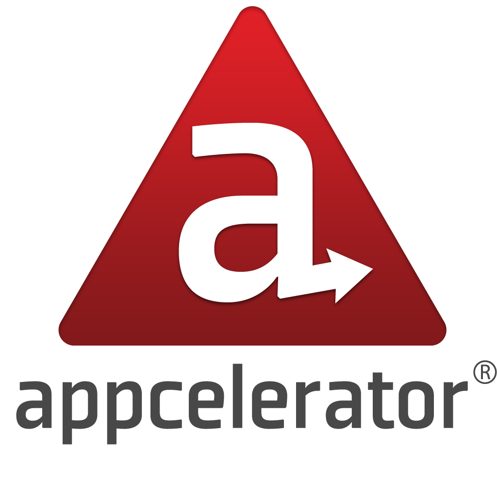
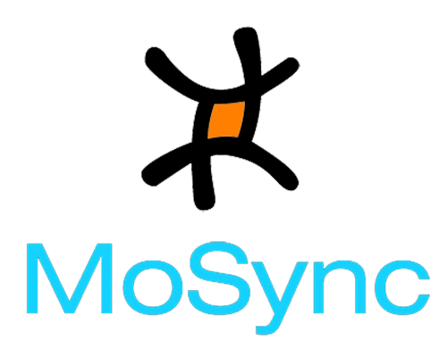
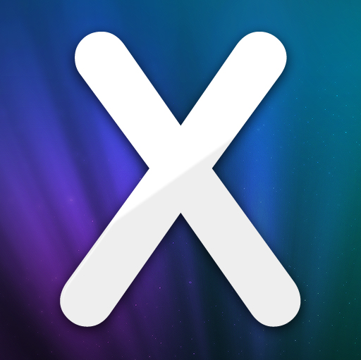
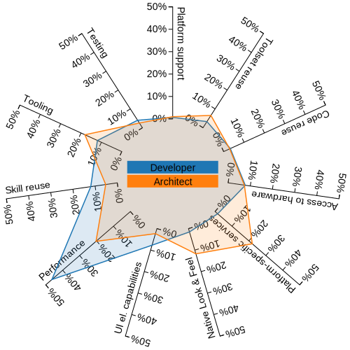
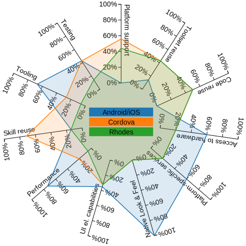
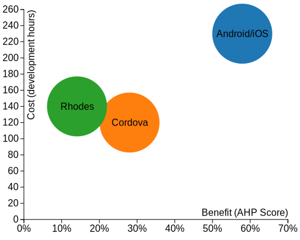

#thesis12
A comparative study of cross-platform tools for mobile application development
Michiel Staessen (@mstaessen)
Contents
- Introduction & Goals
- Methodology & Results
- Demo
Introduction
Increasing smartphone sales
 Source: [Gartner]
Increasing tablet sales
 Source: [Gartner]
Problem
Mobile devices have great potential:
everybody wants an app
but
Market is constantly evolving:
nobody wants to commit to a single vendor
"Make it work cross-platform."
— any client
Fragmentation
Cross-Platform Tools
- Deal with fragmentation
- Providing easy access to new platforms
- Deal with development inefficiency
Lower entry and exit barriers
Which One?
Goals
- Develop a methodology to evaluate and select CPT's
- Use the methodology to evaluate some CPT's
Methodology
Methodology
Generic software selection methodology [Jadhav & Sonar]
- Define selection criteria
- Identify potential candidates
- List selected alternatives
- Define evaluation criteria
- Evaluate selected alternatives
- Select the best-suited alternative(s)
Step 1: Define selection criteria
The set of functional and non-functional requirements that the software package has to meet. [Jadhav & Sonar]
Defined by Capgemini during the initial meeting
Defined selection criteria
- Support for native Android and iOS
- Support for smartphones and tablets
- Suited for enterprise applications
- Maturity
- Good support, through community or vendor
Step 2: Identify potential candidates
Preliminary investigation of availabile software packages that might be suitable candidates, including high level investigation of major functionalities and features supported by the software package. [Jadhav & Sonar]
Identified from research by VisionMobile (completed)
and research2guidance (still ongoing).
Internet searches did not reveal new tools.
160 Identified candidates
Step 3: List selected alternatives
Filter the candidates from step 2 with the selection criteria from step 1. [Jadhav & Sonar]
Still too much, prioritized by popularity and targeted market.
Selected alternatives

 
Cordova/PhoneGap versus Motorola Rhodes
- Hybrid apps
- Pure HTML5/CSS/JS
- Apache 2.0 License
- Interpreted/hybrid apps
- Ruby/HTML/CSS/JS
- MIT License
Step 4: Define evaluation criteria
In this phase, criteria to be used for evaluation of the software packages are identified and arranged in a hierarchical tree structure. [Jadhav & Sonar]
Identified from literature review and interviews
with a developer, architect and salesman at Capgemini
Important: do not mix costs with benefits!
Defined evaluation criteria
- Portability
- Platform support
- Toolset reuse
- Code reuse
- Application Experience
- Native integration
- UI capabilities
- Performance
- Productivity
- Skillset reuse
- Tooling
- Testing
Step 5: Evaluate selected alternatives
Assign weights to each basic criterion and rate selected alternatives against them. [Jadhav & Sonar]
Criteria and alternatives are weighted and rated with the Analytic Hierarchy Process (AHP).
- Can handle qualitative and quantitative criteria
- Based on relative, pairwise comparison
(based on judgement from practical experience with
proof-of-concept application and multimedia course) - Mathematical foundation
Evaluation Results
 Step 6: Select the best-suited alternative(s)
Rank the available alternatives in descending order of score and select the best one. However, the decision is always human-dependable. [Jadhav & Sonar]
Indeed, there is a trade-off between costs and benefits.
Cost-Benefit Analysis
Demo
Questions?
References
- Gartner, smartphone sales: 2008 Q2, 2008 Q3, 2008 Q4, 2010 Q1, 2010 Q2, 2010 Q3, 2010 Q4, 2011 Q1, 2011 Q2, 2011 Q3, 2011 Q4, 2012 Q1, 2012 Q2, 2012 Q3, 2012 Q4, 2013 Q1
- Gartner, tablet sales: sales 2010 and prediction till 2015, sales 2011 and prediction till 2016
- Jadhav & Sonar, Evaluating and selecting software packages: A review, 2009
- Jadhav & Sonar, Framework for evaluation and selection of the software packages, 2011
- VisionMobile, Cross-Platform Developer Tools 2012, 2012
- research2guidance, Cross-platform tools can save more than 30% of app development time, 2012
- T. L. Saaty, The Analytic Hierarchy Process: Planning, Priority Setting, Resource Allocation, McGraw-Hill, 1980